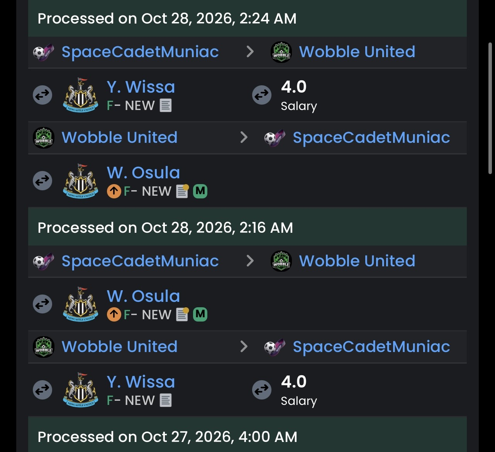
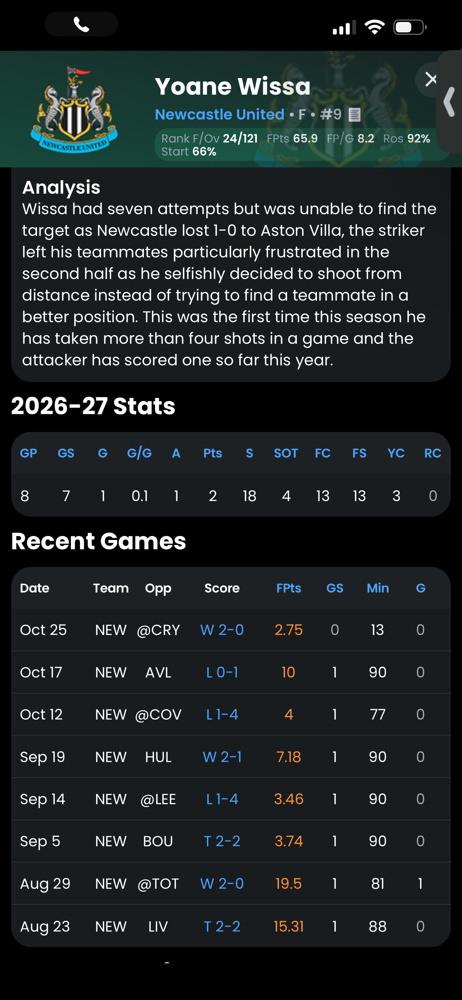
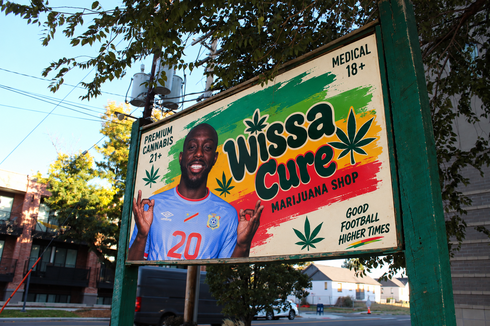
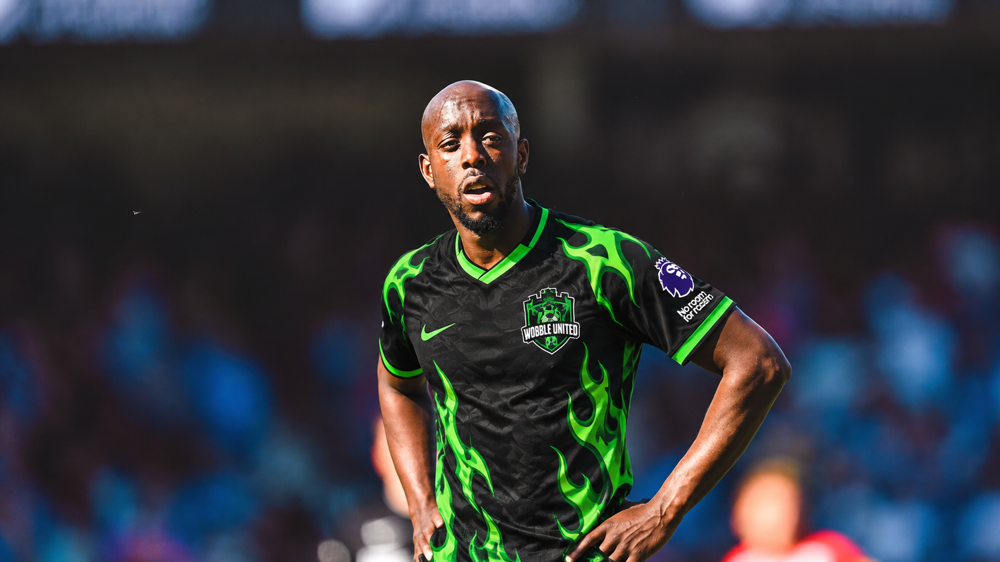

LONESTAR PREMIER LEAGUE
LONESTAR PREMIER LEAGUE
In one of the most bizarre transactions in Lonestar Premier League history, Wobble United briefly traded Yoane Wissa to SpaceCadetMuniac early Wednesday morning, only to bring him back eight minutes later.
According to Fantrax records, Wissa was exchanged for Newcastle forward William Osula at 2:16 AM. By 2:24 AM, the deal had been reversed.

Was it a mistake? A collapsed negotiation? A sudden change of heart?
Apparently, none of the above.
When questioned about the incident, the Wobble United manager confirmed the trade was intentional, explaining:
“Was showing wissa what would happen if he doesn't lock tf in.”
Apparently, the threat of being shipped off to SpaceCadetMuniac was considered an appropriate motivational tactic.
And given Wissa's recent performances, perhaps the manager's frustration is understandable.
One Goal, Eight Appearances
The Newcastle forward has managed just one goal and one assist in eight appearances, recording 18 shots with only four on target.
His latest outing produced just 2.75 fantasy points in 13 minutes, while a previous performance against Aston Villa saw him attempt seven shots without finding the target.

For a club sitting ninth in the Lonestar Premier League with 18 points, patience appears to be wearing thin.
But Wissa's struggles have also revived questions about a familiar controversy.
A Denver Distraction?
Longtime league followers will remember Wissa's involvement in the infamous 48 Hours of Chaos transfer saga, when the forward reportedly became furious after being excluded from a move to Omar FC in Denver.
The reason? A marijuana sponsorship agreement he had already secured with a Denver based company.

Now, with his performances declining, some around the league might wonder whether his business interests have become a distraction.
Or, as one particularly cynical observer might joke, has Wissa been dipping into his own supply?
There is no evidence to suggest that, of course.
But with one goal in eight appearances, Wissa may find the jokes difficult to escape until his performances improve.
A Message Received?
For SpaceCadetMuniac, the situation was equally strange. The club briefly acquired a new forward before returning him just eight minutes later.

Whether Wissa completed a medical, met his teammates, or even had time to unpack remains unclear.
What is clear is that Wobble United's manager has sent a message.
Perform, or risk being traded. Even if it's only for eight minutes.
And somewhere in Denver, a marijuana company may be wondering why its most talked about athlete keeps making headlines for everything except scoring goals.